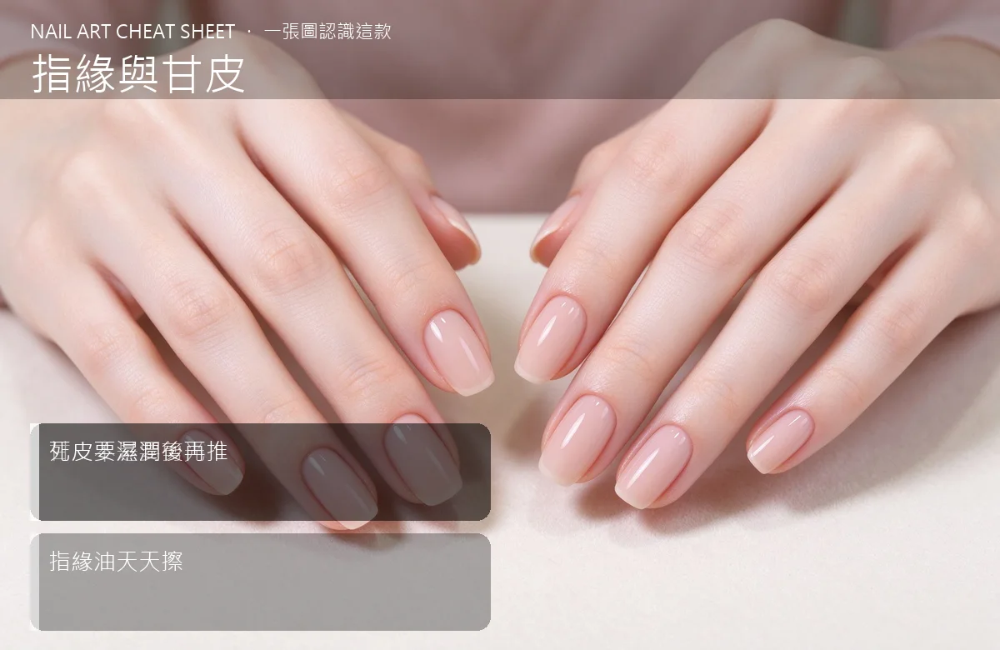

美甲指緣與甘皮是什麼？中階入門攻略
指緣乾巴巴、倒刺一堆，再貴的美甲也救不了；甘皮推得動、剪不得。
指緣與甘皮原理與辨識重點：美甲師不說的甘皮不是要剪光
很多人把「甘皮」和「硬繭死皮」混為一談。真正的甘皮（eponychium）是貼在甲根那層透明薄膜，它保護新生指甲，剪掉會讓細菌跑進去。我們要處理的是它後面那堆乾掉翹起的「死皮」——濕熱軟化後輕輕推開，多餘的再用甘皮剪一次一點修剪。
誰適合做指緣與甘皮？保養必知對號入座
指緣常長倒刺、做完美甲沒兩周指緣就翹皮的人；也是沙龍保養案每天都在做的基本功。
指緣與甘皮美甲施作步驟：甘皮推／甘皮剪
洗澡或泡溫手後（皮膚軟）→ 用甘皮推棒順著甲根輕輕把死皮往後推 → 多餘硬皮用甘皮剪一次一點帶掉 → 立刻擦指緣油。口訣：濕、軟、輕推。
指緣與甘皮優缺點分析：美甲持久度與傷甲評估
| 優點 | 說明 |
|---|---|
| 指緣乾淨，整副美甲看起來立刻精緻十倍；後續上色也不會因為死皮翹邊。 | 是台式流派的招牌，中階就能上手 |
| 缺點 | 說明 |
| 甘皮剪很鋒利，失手剪到活皮會流血、會感染；新手建議先用推的，不要急著剪。 | 前置與絕對不要把甘皮「剪光」。那層薄膜是保護層，剪光了甲根容易受感染、指甲也長得亂糟糟。沒顧好會打折 |

指緣與甘皮新手雷區：死皮要濕潤後再推與常見錯誤
注意：絕對不要把甘皮「剪光」。那層薄膜是保護層，剪光了甲根容易受感染、指甲也長得亂糟糟。
指緣與甘皮和其他美甲做法的差別比較
跟「指緣日常保養」不同：那篇專講天天擦油、居家照護；這篇講沙龍級的甘皮處理流程和工具使用。
指緣與甘皮美甲常見問題 FAQ
Q：倒刺可以直接撕嗎？ A：不行。用小剪刀齊根剪掉，再厚擦一層指緣油。撕開會一路撕到活皮、流血、還會留疤。
Q：甘皮多久修一次？ A：一般 2–3 週一次，跟著美甲回補走；天天擦油，中間不會長得很誇張。